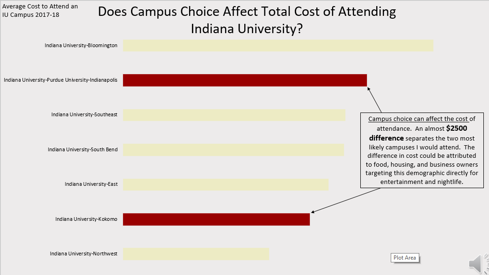
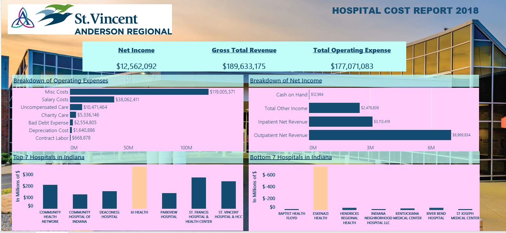

Below are a few links to repositories with work I've completed in Tableau, Excel, and Power Point. These repositories contain all the items needed to view my work and processes.
Excel is the program I have the most experience with, having used it for years to create pivots, graphs, and macros.
Below is an example of using Excel with Power Query to clean, organize, and analyze data. I then transformed the findings into a PowerPoint presentation, highlighting key insights.
Finally, I added audio and converted it into an MP4 for distribution.

Here is an example of a presentation I created with added audio.
Built in PowerPoint, the audio was recorded and edited using various tools. I developed proficiency in audio editing while creating a podcast with my wife—a project we hope to resume in the future.
Though the podcast was short-lived, it gave me the skills to produce high-quality, engaging content. This example highlights those skills and their application in a different setting
I worked with Tableau for a short time but gained the skills to earn a Tableau design certificate. This link includes two dashboard examples where I used web-scraped data to create insights and complex drill-down reports.
